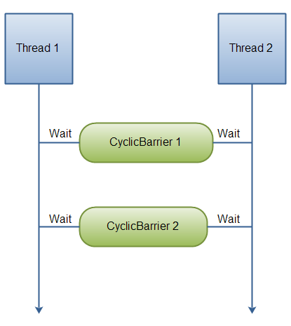
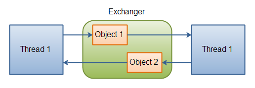
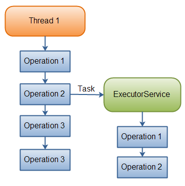

Every thread running in the JVM has its own stack.
Contains all the methods it has executed up to the current point of execution.
Local variables of primitive data types are stored inside the stack.
Object references are stored on the stack.
Heap:
Contains all objects created by your java application.
Object member variables are stored on the heap along with the object itself.
Instance variables are on the heap.
Static/class variables are stored on the heap along with the class definition (stored in a different region) and can be referenced by all other threads that have a reference the the object
Race Condition
Race Condition: When two or more threads are trying to access the same resource. Gives inconsistent output.
Thread Safety
Objects created locally and not shared with other threads are thread safe. Local primitive variables are thread safe.
A resource that never escapes the control of the thread is safe.
Immutability
Immutable object: An object whose state cannot be modified after it's created.
Can also be used to achieve thread safety.
Objects shared between threads are never updated by any of the threads by making the shared objects immutable, and thereby thread safe.
The reference to the immutable object may not be thread safe so we use synchronization.
Synchronization
Used when two threads need to interact with a shared resource.
Thread Local
Allows you to create variables that can only be read and written to by that class.
private static final ThreadLocal<>
If you want to access a thread local set by the parent class, then you need to use InheritableThreadLocal class.
Volatile Keyword
Used to ensure we are reading from and getting the data from the main memory and not the cache memory.
Gets the data from the cache memory and updates the main memory.
This is an expensive process, since cache memory is used for efficiency this should only be used with shared resources.
private volatile String spaces;
Daemon Thread
Low priority thread that keeps running in the background to perform background tasks like (garbage collection).
setDaemon()
Set to true on a thread to make it a daemon thread.
isDaemon()
Check if a thread is a daemon thread.
Thread Priority
Thread priority gives a thread more cpu preference. The default value is 5.
The Concurrency Utilities
Semaphore
Controls access to a shared resource through the use of a counter.
CountDownLatch
Waits until a specified number of events have occurred.
To wait on the latch, a thread calls await().
Each call to countDown() decrements the count associated with the invoking object.
CyclicBarrier
Enables a group of threads to wait at a predefined execution point.
When each thread reaches the barrier, have it call await() on that object pausing execution of the thread until all of the other threads also call await()..
Exchanger
Exchanges data between two threads.
Phaser
Synchronizes threads that advance through multiple phases of an operation.
Executor
Controls the execution of threads.
ExecutorService
The ExecutorService interface extends Executor by adding methods that help manage and control the execution of threads.
Runnable
The Runnable interface is implemented in order to execute threads. The threads created will not return a value. Preferable to Callable, because it avoids inheritance.
Callable
The Callable interface represents a thread that returns a value.
Future
A generic interface that represents the value that will be returned by a Callable object.
TimeUnit Enumeration
TimeUnit is an enumeration that is used to specify the granularity (or resolution) of the timing.
Locks
Objects that offer an alternative to using synchronized to control access to a shared resource.
Before accessing a shared resource, the lock that protects that resource is acquired. When access to the resource is complete, the lock is released.
Atomic Operations
Methods that get, set, or compare the value of a variable in one uninterruptible (that is, atomic) operation.
"Concurrent Program"
Refers to a program that makes extensive, integral use of concurrently executing threads.
For Example: A program that uses separate threads to simultaneously compute the partial results of a larger computation.
New threads can be created by implementing Runnable or by extending Thread.
Inter-thread communication is supported by the wait() and notify() methods that are defined by Object.
Concurrent API Packages
The concurrency utilities are contained in the java.util.concurrent package and in its two subpackages: java.util.concurrent.atomic and java.util.concurrent.locks.
java.util.concurrent
Defines the core features that support alternatives to the built-in approaches to synchronization and interthread communication.
Synchronizers
Executors
Concurrent collections
The Fork/Join Framework
Synchronizers
Semaphore
Controls access to a shared resource through the use of a counter.
CountDownLatch
Waits until a specified number of events have occurred.
To wait on the latch, a thread calls await().
Each call to countDown() decrements the count associated with the invoking object.
CyclicBarrier
Enables a group of threads to wait at a predefined execution point.
When each thread reaches the barrier, have it call await() on that object pausing execution of the thread until all of the other threads also call await()..
Exchanger
Exchanges data between two threads.
Phaser
Synchronizes threads that advance through multiple phases of an operation.
Executors
Manage thread execution.
At the top of the executor hierarchy is the Executor interface, which is used to initiate a thread.
ExecutorService
Extends Executor and provides methods that manage execution.
ThreadPoolExecutor
ScheduledThreadPoolExecutor
ForkJoinPool
The Future and Callable Interfaces
Future contains a value that is returned by a thread after it executes. "its value gets defined in the future", when the thread terminates.
Callable defines a thread that returns a value.
Concurrent Collection Classes
ArrayBlockingQueue
ConcurrentHashMap
ConcurrentLinkedDeque
ConcurrentLinkedQueue
ConcurrentSkipListMap
ConcurrentSkipListSet
CopyOnWriteArrayList
CopyOnWriteArraySet
DelayQueue
LinkedBlockingDeque
LinkedBlockingQueue
LinkedTransferQueue
PriorityBlockingQueue
SynchronousQueue
These collections work much like the other collections except that they provide concurrency support.
TimeUnit Enumeration
To better handle thread timing, java.util.concurrent define the TimeUnit enumeration.
java.util.concurrent.atomic
Facilitates the use of variables in a concurrent environment.
It provides a means of efficiently updating the value of a variable without the use of locks. Through the use of classes, such as AtomicInteger and AtomicLong, and methods, such as compareAndSet(), decrementAndGet(), and getAndSet().
java.util.concurrent.locks
Provides an alternative to the use of synchronized methods.
At the core of this alternative is the Lock interface, which defines the basic mechanism used to acquire and relinquish access to an object.
lock()
tryLock()
unlock()
The advantage to using these methods is greater control over synchronization.
ThreadLocal
Every thread has its own ThreadLocal variable and they can use it's get() and set() methods to get the default value or change it's value local to the Thread.
ThreadLocal instances are typically private static fields in classes that wish to associate state with a thread.
Synchronization Objects
Synchronization objects are supported by the Semaphore, CountDownLatch, CyclicBarrier, Exchanger, and Phaser classes.
Semaphore
Controls access to a shared resource through the use of a counter.
If the counter is > 0 then access is allowed.
If the counter = 0 then access is denied.
The counter is counting permits that allow access to the shared resource.
Thus, to access the resource, a thread must be granted a permit from the semaphore.
Constructors:
Semaphore(int num)
Semaphore(int num, boolean how)
num specifies the number of permits or threads that can have access to the resource at a given time.
By setting how to true, you can ensure that waiting threads are granted a permit in the order in which they requested access.
To acquire a permit, call the acquire() method
void acquire() throws InterruptedException
void acquire(int num) throws InterruptedException
To release a permit, call the release() method
void release()
void release(int num)
CountDownLatch
A CountDownLatch is initially created with a count of the number of events that must occur before the latch is released.
CountDownLatch(int num) // num specifies the number of events that must occur in order for the latch to open.
class MyThread implements Runnable {
CountDownLatch latch;
MyThread(CountDownLatch c) {
latch = c;
new Thread(this).start();
}
@Override
public void run() {
for (int i = 0; i < 5; i++) {
System.out.println(i);
latch.countDown(); // decrement count
}
}
}
CyclicBarrier
Used when a set of two or more threads must wait at a predetermined execution point until all threads in the set have reached that point.
It enables you to define a synchronization object that suspends until the specified number of threads has reached the barrier point.
Constructors:
CyclicBarrier(int numThreads)
CyclicBarrier(int numThreads, Runnable action)
numThreads specifies the number of threads that must reach the barrier before execution continues.
In the second form, action specifies a thread that will be executed when the barrier is reached.
Creating a CyclicBarrier
First, create a CyclicBarrier object, specifying the number of threads that you will be waiting for.
Next, when each thread reaches the barrier, have it call await() on that object. This will pause execution of the thread until all of the other threads also call await().
Once the specified number of threads has reached the barrier, await() will return and execution will resume.
The await() method
int await() throws InterruptedException, BrokenBarrierException
int await(long wait, TimeUnit tu) throws InterruptedException, BrokenBarrierException, TimeoutException
First form waits until all the threads have reached the barrier point.
Second form waits only for the period of time specified by wait.
A CyclicBarrier can be reused because it will release waiting threads each time the specified number of threads calls await().
For Example: This will create a new CyclicBarrier and perform the first 3 thread executions, reach the barrier, and then perform the next 3, and reach the barrier again.
CyclicBarrier cb = new CyclicBarrier(3, new BarAction());
new MyThread(cb, "A");
new MyThread(cb, "B");
new MyThread(cb, "C");
new MyThread(cb, "X");
new MyThread(cb, "Y");
new MyThread(cb, "Z");

Exchanger
Designed the simplify the exchange of data between two threads.
It simply waits until two separate threads call its exchange() method. When that occurs, it exchanges the data supplied by the threads.
For Example: One thread might prepare a buffer for receiving information over a network connection. Another thread might fill that buffer with the information from the connection. Each time a new buffer is needed, an exchange is made.
Exchanger <V> // Here, V specifies the type of the data being exchanged.
Constructors
V exchange(V objRef) throws InterruptedException
V exchange(V objRef, long wait, TimeUnit tu) throws InterruptedException, TimeoutException
objRef is a reference to the data to exchange. The data received from the other thread is returned.
The second form allows a time-out period to be specified.

Phaser
Primary purpose is to enable the synchronization of threads that represent one or more phases of activity.
For Example: You might have a set of threads that implement three phases of an order-processing application.
First phase, separate threads are used to validate customer information, check inventory, and confirm pricing.
Second phase, two threads that compute shipping costs and all applicable tax.
Final phase, confirms payment and determines estimated shipping time.
A Phaser works a bit like a CyclicBarrier, described earlier, except that it supports multiple phases. As a result, Phaser lets you define a synchronization object that waits until a specific phase has completed.
Phaser()
Phaser(int numParties)
register()
To register parties after a Phaser has been constructed.
int arrive()
To signal that a party has completed a phase.
arriveAndAwaitAdvance()
If you want to indicate the completion of a phase and then wait until all other registrants have also completed that phase.
arriveAndDeregister()
A thread can arrive and then deregister itself, it returns the current phase number or a negative value if the phaser has been terminated.
final int getPhase()
To obtain the current phase number
protected boolean onAdvance(int phase, int numParties)
It is possible to take control of precisely what happens when a phase advance occurs. To terminate the phaser, onAdvance() must return true. To keep the phaser alive, onAdvance() must return false.
First, create a new instance of Phaser.
Next, register one or more parties with the phaser, either by calling register() or by specifying the number of parties in the constructor.
For each registered party, have the phaser wait until all registered parties complete a phase.
A party signals this by calling one of a variety of methods supplied by Phaser, such as arrive() or arriveAndAwaitAdvance().
After all parties have arrived, the phase is complete, and the phaser can move on to the next phase (if there is one), or terminate.
Executor Services and more...
Executor
Controls the execution of threads.
void execute(Runnable thread) // execute() starts the specified thread.
ExecutorService
The ExecutorService interface extends Executor by adding methods that help manage and control the execution of threads.
Represents an asynchronous execution mechanism which is capable of executing tasks concurrently in the background.
ThreadPoolExecutor
Implements the Executor and ExecutorService interfaces and provides support for a managed pool of threads.
ScheduledThreadPoolExecutor
Also implements the ScheduledExecutorService interface to allow a pool of threads to be scheduled.
ForkJoinPool
Implements the Executor and ExecutorService interfaces and is used by the Fork/Join Framework.
Task Delegation
Once the thread has delegated the task to the ExecutorService, the thread continues its own execution independent of the execution of that task.
The ExecutorService then executes the task concurrently, independently of the thread that submitted the task.

Example:
// First an ExecutorService is created using the Executors newFixedThreadPool() factory method. This creates a thread pool with 10 threads executing tasks.
ExecutorService executorService = Executors.newFixedThreadPool(10);
// Second, an anonymous implementation of the Runnable interface is passed to the execute() method. This causes the Runnable to be executed by one of the threads in the ExecutorService.
executorService.execute(new Runnable() {
public void run() {
System.out.println("Asynchronous task");
}
});
// Shut down executor service
executorService.shutdown();
Java ExecutorService Implementations
The Java ExecutorService is very similar to a thread pool. In fact, the implementation of the ExecutorService interface present in the java.util.concurrent package is a thread pool implementation.
Since ExecutorService is an interface, you need to use its implementations in order to make any use of it.
ThreadPoolExecutor
ScheduledThreadPoolExecutor
Thread Pool
Provides a set of threads that is used to execute various tasks. Instead of each task using its own thread, the threads in the pool are used.
This reduces the overhead associated with creating many separate threads.
Most often you will want to obtain an executor by calling one of the following static factory methods defined by the Executors utility class.
static ExecutorService newCachedThreadPool()
Creates a thread pool that adds threads as needed but reuses threads if possible.
There are a few different ways to delegate tasks for execution to an ExecutorService.
execute(Runnable)
Takes a java.lang.Runnable object and executes it asynchronously.
submit(Runnable)
Also takes a Runnable implementation, but returns a Future object. This Future object can be used to check if the Runnable has finished executing.
submit(Callable)
Takes a Java Callable instead of a Runnable. The Callable's result can be obtained via the Java Future object returned by the submit(Callable) method.
invokeAny(...)
Takes a collection of Callable objects, or subinterfaces of Callable. returns the result of one of the Callable objects. no guarantee which one though. If one of the tasks complete (or throws an exception), the rest of the Callable's are cancelled.
invokeAll(...)
Invokes all of the Callable objects you pass to it in the collection passed as a parameter. Returns a list of Future objects via which you can obtain the results of the executions of each Callable.
Runnable vs. Callable
Both interfaces represents a task that can be executed concurrently by a thread or an ExecutorService. Both interfaces only have a single method.
Runnable Interface Declaration
public interface Runnable {
public void run();
}
Callable Interface Declaration
public interface Callable{
public Object call() throws Exception;
}
The main difference is that the call() method can return an Object from the method call.
Another difference between call() and run() is that call() can throw an exception.
If you need to submit a task to a Java ExecutorService and you need a result from the task, then you need to make your task implement the Callable interface. Otherwise your task can just implement the Runnable interface.
A Java Callable is different from a Runnable in that the Runnable interface's run() method does not return a value, and it cannot throw checked exceptions (only RuntimeExceptions).
Additionally, a Runnable was originally designed for long running concurrent execution, e.g. running a network server concurrently, or watching a directory for new files. The Callable interface is more designed for one-off tasks that return a single result.
shutdown()
A call to shutdown() is important. If it were not present in the program, then the program would not terminate because the executor would remain active.
Callable
The Callable interface represents a thread that returns a value.
An application can use Callable objects to compute results that are then returned to the invoking thread.
It can also be used to run a thread that returns a status code that indicates the successful completion of the thread.
Callable is a generic interface that is defined like this:
interface Callable <V> // V indicates the type of data returned by the task.
Callable defines only one method
V call() throws Exception
Inside call() you define the task that you want performed. After that task completes, you return the result. If the result cannot be computer, call() must throw an exception.
A Callable task is executed by an ExecutorService, by calling its submit() method.
<T>Future<T>submit(Callable<T> task)
Task is the Callable object that will be executed in its own thread. The result is returned through an object of type Future
Java Callable
The Java Callable interface, java.util.concurrent.Callable, represents an asynchronous task which can be executed by a separate thread. For instance, it is possible to submit a Callable object to a Java ExecutorService which will then execute it asynchronously.
Java Callable Interface Definition
The Java Callable interface is quite simple, it contains a single method named call().
The call() method is called in order to execute the asynchronous task. The call() method can return a result. If the task is executed asynchronously, the result is typically propagated back to the creator of the task via a Java Future.
public interface Callable<V> {
V call() throws Exception;
}
Future
A generic interface that represents the value that will be returned by a Callable object.
Because this value is obtained at some future time, the name Future is appropriate.
interface Future<V> // V specifies the type of the result.
A Java Future, java.util.concurrent.Future, represents the result of an asynchronous computation.
When the asynchronous task is created, a Java Future object is returned.
Once the asynchronous task completes, the result can be accessed via the Future object returned when the task was started.
To obtain the returned value, you will call Future's get() method.
V get() throws InterruptedException, ExecutionException
V get(long wait, TimeUnit tu) throws InterruptedException, ExecutionException, TimeoutException
The first form waits for the result indefinitely. The second form allows you to specify a timeout period in wait. The units of wait are passed in tu, which is an object of the TimeUnit enumeration.
boolean cancel(boolean mayInterruptIfRunning)
boolean isCancelled();
boolean isDone();
Cancel Task
You can cancel a task (Runnable or Callable) submitted to a Java ExecutorService by calling the cancel() method on the Future returned when the task is submitted.
Cancelling the task is only possible if the task has not yet started executing.
future.cancel();
Check if task is done.
You can check if the asynchronous task is done (and a result available) by calling the Future isDone() method.
if(future.isDone()) {
Object result = future.get();
} else {
// do something else
}
Check if task is cancelled
It is also possible to check if the asynchronous task represented by a Java Future is cancelled.
if(future.isCancelled()) {
} else {
}
ThreadPoolExecutor
The java.util.concurrent.ThreadPoolExecutor is an implementation of the ExecutorService interface.
The ThreadPoolExecutor executes the given task (Callable or Runnable) using one of its internally pooled threads.
The thread pool contained inside the ThreadPoolExecutor can contain a varying amount of threads.
corePoolSize
maximumPoolSize
If less than corePoolSize threads are created in the the thread pool when a task is delegated to the thread pool, then a new thread is created, even if idle threads exist in the pool.
If the internal queue of tasks is full, and corePoolSize threads or more are running, but less than maximumPoolSize threads are running, then a new thread is created to execute the task.
Creating a ThreadPoolExecutor
The ThreadPoolExecutor has several constructors available
int corePoolSize = 5;
int maxPoolSize = 10;
long keepAliveTime = 5000;
ExecutorService threadPoolExecutor =
new ThreadPoolExecutor(corePoolSize, maxPoolSize, keepAliveTime, TimeUnit.MILLISECONDS,
new LinkedBlockingQueue<Runnable>());
However, unless you need to specify all these parameters explicitly for your ThreadPoolExecutor, it is often easier to use one of the factory methods in the java.util.concurrent.Executors class.
ScheduledExecutorService
The java.util.concurrent.ScheduledExecutorService is an ExecutorService which can schedule tasks to run after a delay, or to execute repeatedly with a fixed interval of time in between each execution.
Tasks are executed asynchronously by a worker thread, and not by the thread handing the task to the ScheduledExecutorService.
ScheduledExecutorService Implementations
Since ScheduledExecutorService is an interface, you will have to use its implementation in the java.util.concurrent package, in order to use it.
ScheduledThreadPoolExecutor
Creating a ScheduledExecutorService
How you create an ScheduledExecutorService depends on the implementation you use. However, you can use the Executors factory class to create ScheduledExecutorService instances too.
Once you have created a ScheduledExecutorService you use it by calling one of its methods:
schedule (Callable task, long delay, TimeUnit timeunit)
This method schedules the given Callable for execution after the given delay. The method returns a ScheduledFuture which you can use to either cancel the task before it has started executing, or obtain the result once it is executed.
schedule (Runnable task, long delay, TimeUnit timeunit)
This method works like the method version taking a Callable as parameter, except a Runnable cannot return a value, so the ScheduledFuture.get() method returns null when the task is finished.
scheduleAtFixedRate (Runnable, long initialDelay, long period, TimeUnit timeunit)
This method schedules a task to be executed periodically. The task is executed the first time after the initialDelay, and then recurringly every time the period expires.
If any execution of the given task throws an exception, the task is no longer executed. If no exceptions are thrown, the task will continue to be executed until the ScheduledExecutorService is shut down.
If a task takes longer to execute than the period between its scheduled executions, the next execution will start after the current execution finishes. The scheduled task will not be executed by more than one thread at a time.
scheduleWithFixedDelay (Runnable, long initialDelay, long period, TimeUnit timeunit)
This method works very much like scheduleAtFixedRate() except that the period is interpreted differently.
In the scheduleAtFixedRate() method the period is interpreted as a delay between the start of the previous execution, until the start of the next execution.
In this method, however, the period is interpreted as the delay between the end of the previous execution, until the start of the next. The delay is thus between finished executions, not between the beginning of executions.
ExecutorService Shutdown
When you are done using the ExecutorService you should shut it down, so the threads do not keep running.
If your application is started via a main() method and your main thread exits your application, the application will keep running if you have an active ExexutorService in your application.
The active threads inside this ExecutorService prevents the JVM from shutting down.
ScheduledExecutorService Shutdown
Just like an ExecutorService, the ScheduledExecutorService needs to be shut down when you are finished using it. If not, it will keep the JVM running, even when all other threads have been shut down.
"shutdown()
To terminate the threads inside the ExecutorService you call its shutdown() method.
The ExecutorService will not shut down immediately, but it will no longer accept new tasks, and once all threads have finished current tasks, the ExecutorService shuts down.
executorService.shutdown();
"shutdownNow()
If you want to shut down the ExecutorService immediately, you can call the shutdownNow() method.
This will attempt to stop all executing tasks right away, and skips all submitted but non-processed tasks.
executorService.shutdownNow();
"awaitTermination()
The ExecutorService awaitTermination() method will block the thread calling it until either the ExecutorService has shutdown completely, or until a given time out occurs.
The awaitTermination() method is typically called after calling shutdown() or shutdownNow().
void timedJoin(Thread thrd, long delay) throws InterruptedExecution
void timedWait(Object obj, long delay) throws InterruptedExecution
Locks
java.util.concurrent.locks
This package provides support for locks, which are objects that offer an alternative to using synchronized to control access to a shared resource.
Before accessing a shared resource, the lock that protects that resource is acquired.
When access to the resource is complete, the lock is released.
If a second thread attempts to acquire the lock when it is in use by another thread, the second thread will suspend until the lock is released.
lock()
To acquire a lock. If the lock is unavailable, lock() will wait.
unlock()
To release a lock
tryLock()
To see if a lock is available, and to acquire it if it is.
The newCondition() method returns a Condition object associated with the lock.
Using a Condition, you gain detailed control of the lock through methods such as await() and signal(), which provide functionality similar to Object.wait() and Object.notify().
ReentrantLock
java.util.concurrent.locks supplies an implementation of Lock called ReentrantLock.
ReentrantLock implements a reentrant lock, which is a lock that can be repeatedly entered by the thread that currently holds the lock.
ReentrantReadWriteLock
java.util.concurrent.locks also defines the ReadWriteLock interface. This interface specifies a lock that maintains separate locks for read and write access.
Read Lock – if no thread acquired the write lock or requested for it then multiple threads can acquire the read lock.
Write Lock – if no threads are reading or writing then only one thread can acquire the write lock.
StampedLock
Lock acquisition methods return a stamp that is used to release a lock or to check if the lock is still valid.
Waits until the invoking lock can be acquired, unless interrupted.
Condition newCondition()
Returns a Condition object that is associated with the invoking lock.
boolean tryLock()
Attempts to acquire the lock. This method will not wait if the lock is unavailable. Instead, it returns true if the lock has been acquired and false if the lock is currently in use by another thread.
Attempts to acquire the lock. If the lock is unavailable, this method will wait no longer than the period specified by wait, which is in tu units. It returns true if the lock has been acquired and false if the lock cannot be acquired within the specified period.
void unlock()
Releases the lock.
Atomic Operations
java.util.concurrent.atomic
This package offers methods that get, set, or compare the value of a variable in one uninterruptible (that is, atomic) operation.
This means that no lock or other synchronization mechanism is required.
Atomic operations are accomplished through the use of classes, such as AtomicInteger and AtomicLong, and methods such as get(), set(), compareAndSet(), decrementAndGet(), and getAndSet(), which perform the action indicated by their names.
java.util.concurrent.atomic also provides four classes that support lock-free cumulative operations. These are DoubleAccumulator, DoubleAdder, LongAccumulator, and LongAdder.
The accumulator classes support a series of user-specified operations. The adder classes maintain a cumulative sum.